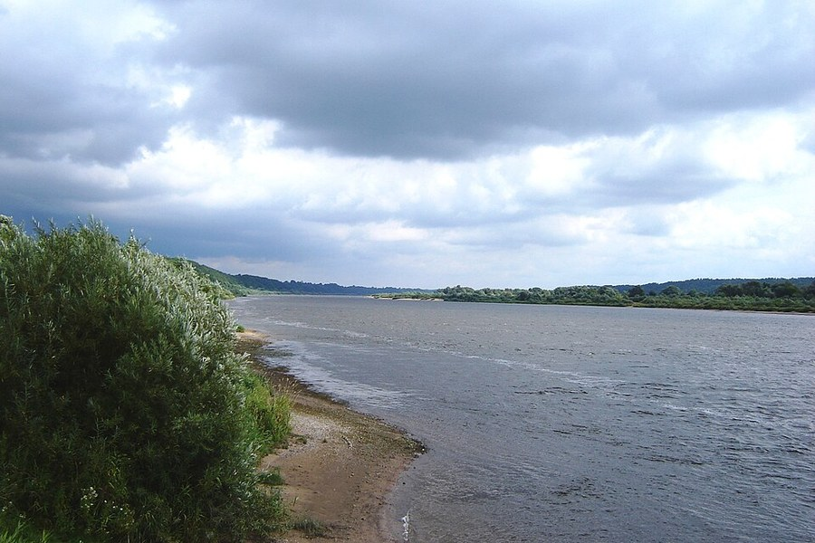

Jurbarkas (Georgenburg)¶
In the 1380s [Historical record]¶
Jurbarkas (Germ. Georgenburg, Jurgenburg) was the Order’s castle on the middle Nemunas, on Bišpiliukai (Kalnėnai) hill about 3 km west of the present town; the dating (1343-1403) is disputed against a “1259” tradition. It was the Order’s outpost in the “castle-studded no man’s land” of the Jurbarkas-Kaunas stretch. On 9 July 1384 Vytautas took it by deception and burned it, capturing the vice-komtur Dietrich von Gruste and ten knights. It was rebuilt in 1387 and destroyed again in 1403; in 1392 the Order let Vytautas lodge relatives there. Zöllner is variously said to have died (20 Aug 1390) at Christburg or at the siege of Jurbarkas; sources disagree. Sources: VLE (Jurgenburg); en.wikipedia (Konrad Zöllner, Lithuanian Civil War).
Jurbarkas (Georgenburg)

Jurbarkas (Georgenburg) · place — Image: Greifen, Public domain via Wikimedia Commons¶

Type |
place |
Note |
Georgenburg: Order castle on the Nemunas border, repeatedly contested by Lithuania. |
Sensory sketch¶
A castle on a hill over the Nemunas, with timber and earth works, a gate with watchers, woods on the slope. July heat; the river broad and brown. In the saga’s night: warm stone, torches, a gate swung open for a vassal, men who have been drinking, and then the smell of burning pitch and the sound of the gate-bar dropped from the wrong side.
In the saga¶
The second fire after Kaunas, lit not in rage but by a lord’s key: the “Išdavikų išdavikas” in its purest form. The Order believed the messenger from Naujapilis, and the gate opened to a lie that travelled faster than the river. The mythic residue is thin; the saga’s weight is moral.
Getting there¶
From Kaunas 75 km straight, about 85 km by the Nemunas (two days by horse, two days downstream by boat). Vytautas rode “along the Nemunas, ahead of the news, which travelled only by river” and reached it on 9 July. Ragnit is about 60 km further downstream; Königsberg lies about 150 km west (c. 190 km by road, four to six days). Skirsnemunė (Christmemel) lies about 9 km away.
Scenes set here¶
Book I ch. 24 Pasirinkimas (9 July 1384), ch. 25 Išdavikų išdavikas (the fire seen from the forest); Book II ch. 30 (a name on Marienburg’s map).
Relations
Events here: Vytautas burns Order castles; turns on the Order
Timeline¶
Year |
Event |
Book |
|---|---|---|
1384-07 |
I · The Wolf’s Exile |
Connections¶
graph LR
ev_burnings_1384["Vytautas burns Order castles; turns on the Order"]
jurbarkas["Jurbarkas (Georgenburg)"]
ev_burnings_1384 -->|Location| jurbarkas
style jurbarkas stroke-width:3px